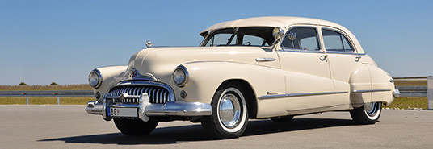
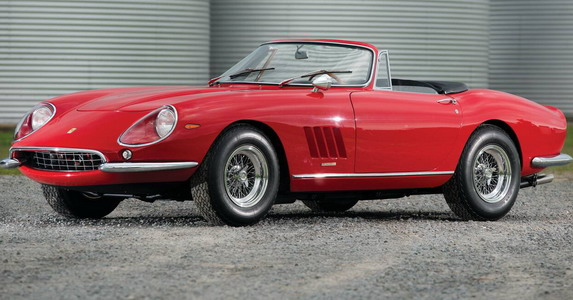

Buick Roadmaster
Buick Roadmaster | 1949-1953 Ovaj model zovu - jahta na četiri točka, a fanovi ove grdosije od skoro dve tone, najviše vole njegove zakrivljene vetrobrane. Bio je to luksuz koji je i posleratna srednja klasa u SAD mogla sebi da priušti.
Cena 11 999$
Alfa Romeo Spider

Alfa Romeo je italijanski proizvođač automobila koji je stekao slavu kroz istoriju auto sporta.Kompanija Alfa Romeo osnovana je 24.juna.1910. u Italiji, u Milanu. Dok u auto sportu je prisutna od 1911. 1966. godine izlazi sada već legendarni ALFA SPIDER DUETTO, najpopularniji carbrio model Alra Romeo automobila. Takođe, ova verzija je upamćena i po tome što je najduže bila u proizvodnji. Ovaj model bio je aktivan u fabrici čitavih 26 godina. Ovaj model je postao legenda čak i na američkom tržištu.
Cena 16 500$
Ferrari
Osnovan od strane Enza Ferrarija, priča o čuvenom modelu Scuderia jeste prča o posvećenosti, različitosti i stvarno brzim automobilima. Nakon preseljenja u Maranello u 1943., Enco je izradio Tipo 815 koji je bio prvi model Ferrari-ja, a ne 125 Sport kako je pogrešno verovano...
Cena 25 000$
Jaguar
.jpg.jpg)
Priča o najboljim Britanskim sportskim automobilima, često ima samo jedno poglavlje, Jaguar E–Type … Linija limuzina koje su ispod haube imale snažne motore, a u enterijeru vrhunski luksuz, su se odlično prodavale, kako na domaćem terenu, tako i u Evropi i Americi. Definiciji sopstvenog stila koji je ostao prepoznatljiv, pomogao je i čuveni sportski model XK120, koji je tih godina već evoluirao do verzije XK150, ali i pored popularnosti i dobre prodaje nije mogao da sakrije godine.